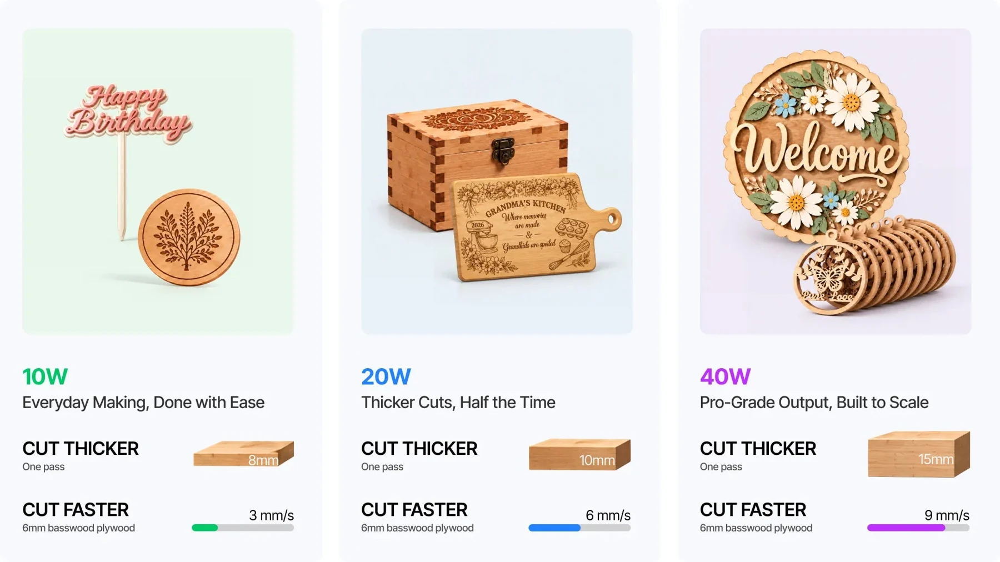
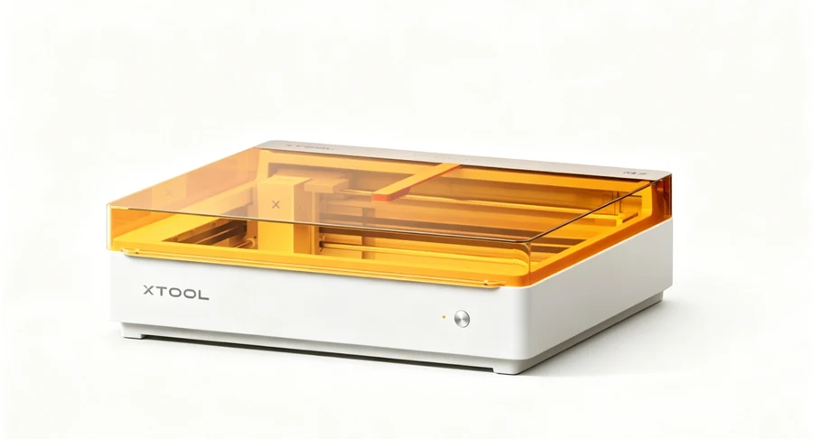
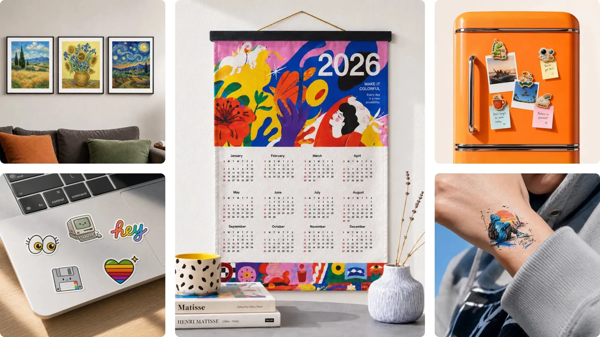
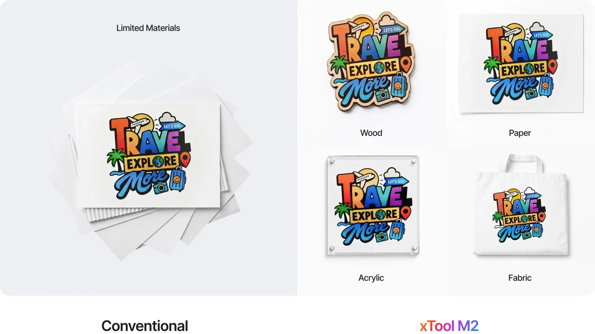
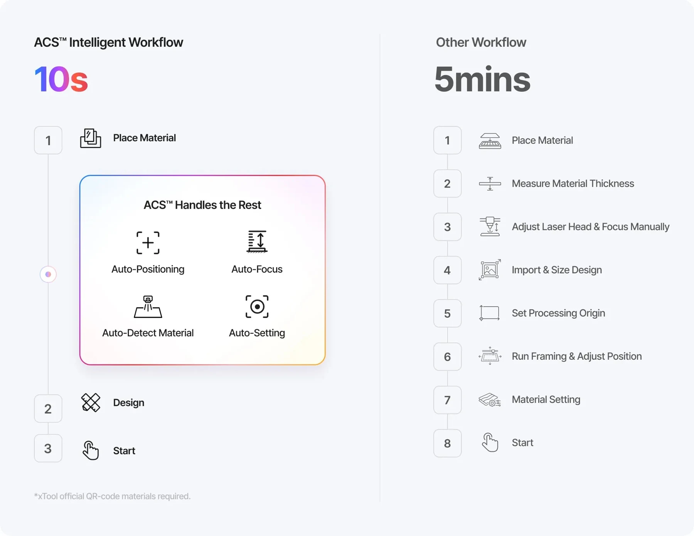
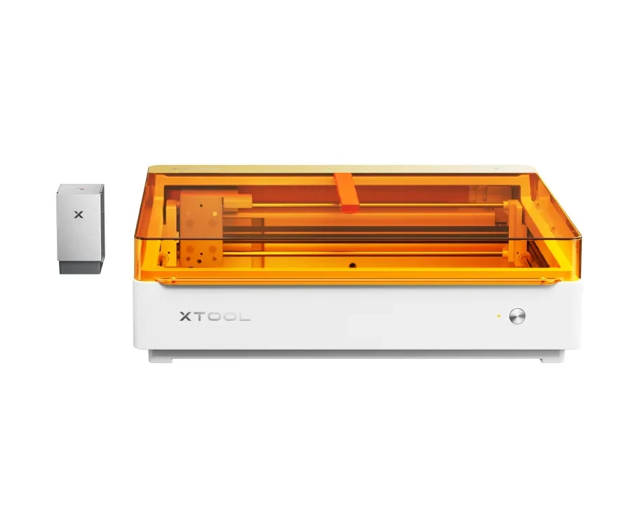
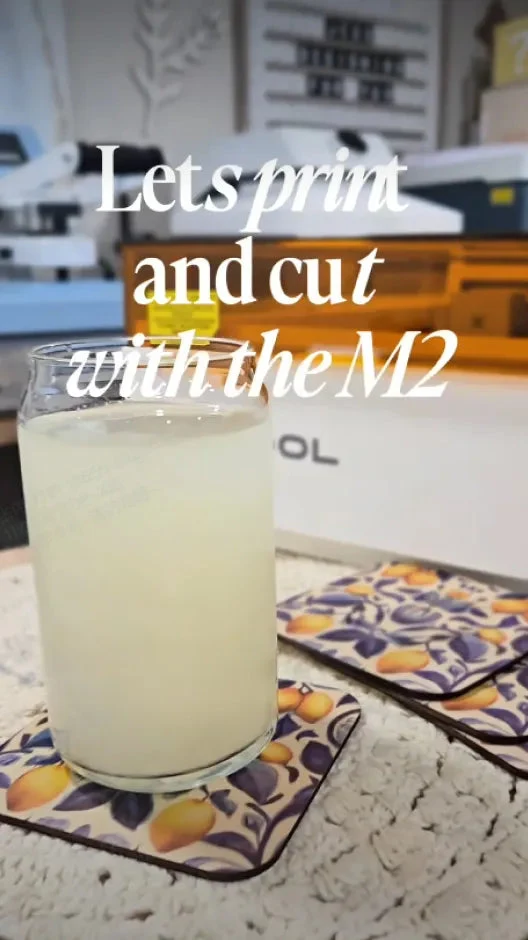
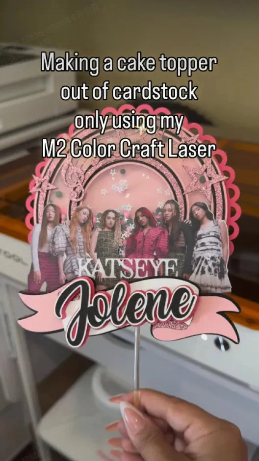

10W / 20W / 40W
藍光雷射模組
以雕刻與切割為核心，從紙材、木片到合適的深色壓克力，製作輪廓、線條與表面紋理。
- 依材料厚度與產量選擇功率
- 不同功率與加工模式的範圍不同
雷射雕刻與切割，搭配 CMYK 彩色噴墨，讓貼紙、木作、禮品與日常小物，都能有自己的設計。一台桌上型創作設備，從第一張圖稿走到親手完成的作品。
模組與周邊依選購套裝搭配；實際供貨、交期與售價請洽詢鈞展科技。

從雷射切割到彩色印製，先想好作品，再選擇需要的模組。不是每一個套裝都包含以下所有配件。

以雕刻與切割為核心，從紙材、木片到合適的深色壓克力，製作輪廓、線條與表面紋理。

把插畫、照片與品牌圖案帶進作品。搭配雷射模組，可在同一台設備完成先印後切的創作流程。
為金屬與部分塑膠的表面標記提供另一種加工方向，適合先帶材料與圖稿討論精細客製效果。
M2 加工模組需使用相容型號，不能直接沿用其他 xTool 主機的加工模組。40W、紅外線與噴墨等配置及所需配件，請於購買前確認。

彩色插畫、姓名貼、禮物吊牌或紙卡，不必停在螢幕裡。搭配 CMYK 與藍光雷射模組，將印製與外形切割串成一個創作流程。
噴墨使用水性墨水；成品耐水性與附著力依材料及表面處理而定。

雙鏡頭與 ACS™ 工作流程協助定位、對焦與加工設定，減少反覆對位的步驟。搭配 xTool Studio，把圖案、材料與加工模式放在同一個工作流程中管理。
從第一件作品到重複製作，仍建議先以邊角料測試，確認圖案位置與效果再進行正式加工。

若想製作杯身、球面或戒指等作品，可進一步了解 RA3 Lite 旋轉配件及對應加工方式。先確認物件材質、尺寸與外形，再討論治具、模組與定位。
旋轉加工需搭配相容配件，並依原廠規範安裝及確認運動範圍。
討論旋轉加工配置 ↗原廠創作者應用示例。作品的製作方式、材料與所需模組不同，可帶著參考圖與我們討論。

讓居家小物有自己的圖案與風格。

以姓名、文字與插畫製作專屬心意。
探索紙卡、裝飾與不同圖案層次。
從單件樣品開始，討論小量製作。
圖片為原廠網站展示的創作者作品，非鈞展科技客戶案例；不代表所有材料均可直接加工。
直接播放原廠網站影片，了解設備與創作應用。影片中的模組、配件與材料可能為選配。
看看彩印、切割與雕刻如何串起創作靈感。
影片來源：xTool 原廠 M2 產品頁。原廠介紹 ↗
先確認材質，再選模組。下表為選購方向，不是直接加工的參數表；實作前請先測試。
| 材料與作品方向 | 可先了解的模組 | 選材重點 |
|---|---|---|
| 紙卡、標籤、相容貼紙 | CMYK＋藍光雷射 | 貼紙與膠層須確認不含 PVC；雷射切邊可能出現焦痕。 |
| 木片、合板與木作小物 | 藍光雷射；彩印可加 CMYK | 印在木材上通常需底塗或表面處理，避免滲色。 |
| 深色不透明壓克力 | 藍光雷射 | 需為藍光可加工材質；透明壓克力不適合直接以藍光切割。 |
| 不鏽鋼、金屬銘牌 | 3W 紅外線 | 以表面雕刻／標記為方向，不等同金屬切割。 |
| 真皮、布料與其他手作材料 | 依材料搭配藍光或 CMYK | 先確認成分與表面處理；避免來路不明或含氯的材料。 |
請勿雷射加工 PVC、PC 或成分不明的皮革與泡棉。完整相容性與操作條件請參考 M2 原廠材料指南 ↗。
有貼紙、紙卡與插畫應用，可詢問 CMYK 模組、墨匣、底塗與表面保護等材料。
金屬標記可評估 3W 紅外線；杯身等物件另依需求評估 RA3 Lite 與適合治具。
依加工頻率、材料與場地規劃排煙管路、相容淨化設備及工作桌面。
以上為配置方向，不代表全數隨機附贈。主機、模組、淨化器、旋轉配件與耗材請以實際報價明細確認。
不同模組的加工範圍不同。以下依原廠使用指南與 FAQ 整理，實際版本以交付設備及原廠更新資料為準。
| 產品名稱 | xTool M2 |
| 可搭配加工模組 | 10W／20W／40W 藍光雷射、3W 紅外線、CMYK 噴墨；依套裝及選配確認 |
| 藍光加工範圍 | 10W／20W：426 × 320 mm 40W：426 × 312 mm |
| 紅外線加工範圍 | 3W：412.5 × 310 mm |
| CMYK 噴墨範圍 | 自動開關底蓋模式：300 × 284 mm 非自動開關底蓋模式：370 × 284 mm |
| 最高移動速度 | XY 軸最高 600 mm/s；非所有材料的實際切割速度 |
| 定位方式 | 遠景與近景雙鏡頭，依加工模式搭配定位與預覽 |
| 機身尺寸 | 610 × 569 × 180 mm |
| 主機重量 | 約 12.3 kg（基本配置） |
| 連線與軟體 | USB／Wi-Fi；xTool Studio，Windows／macOS |
| 雷射安全等級 | Class 1；限完整防護、連鎖裝置正常且依規範使用的條件 |
不同加工模式與配件組合可能縮小有效範圍。機身尺寸未包含開蓋、排煙與操作所需空間。
把作品用途、材料與預算告訴我們，配置會更有方向。
M2 搭配的是 CMYK 水性噴墨模組，並可搭配雷射加工；O1 是另一種 UV 印製設備。若以貼紙、雷雕與手作為主，可先看 M2；若想了解 UV 表面印製，歡迎另外查看 O1 產品頁。
不一定。雷射功率、CMYK、紅外線、旋轉與淨化配件依套裝及選購項目不同。詢價時我們會一起確認主機與配件清單。
可搭配 CMYK 與藍光雷射模組，依 xTool Studio 的 Print Then Cut 流程進行；需要確認材料、圖稿及加工範圍。
透明壓克力不適合直接用藍光雷射切割。金屬應依相容材料與模組評估表面標記；請不要把紅外線雕刻理解為金屬切割。
原廠說明 CMYK 使用水性墨水，遇水可能暈染或褪色，並不建議直接清洗。若需要耐水成品，請先告知使用情境並評估材料與保護方式。
原廠目前說明 M2 使用 xTool Studio，不支援 LightBurn 或 XCS。請使用原廠支援的軟體與相容版本。
需要規劃排煙，並依原廠安全指引在有人看顧下加工。Class 1 並不表示可以省略排煙、防火、材料確認或成人監督。
可以先聯絡鈞展科技，說明材料、作品尺寸、數量與希望達成的效果。可安排的展示機型、日期及打樣條件需先確認。
告訴我們你的材料、創作方向與預算，一起討論主機、模組與配件。
規格核對：2026 年 11 月。產品及創作者影像由 xTool 原廠網站提供；商標與影像權利屬各權利人。